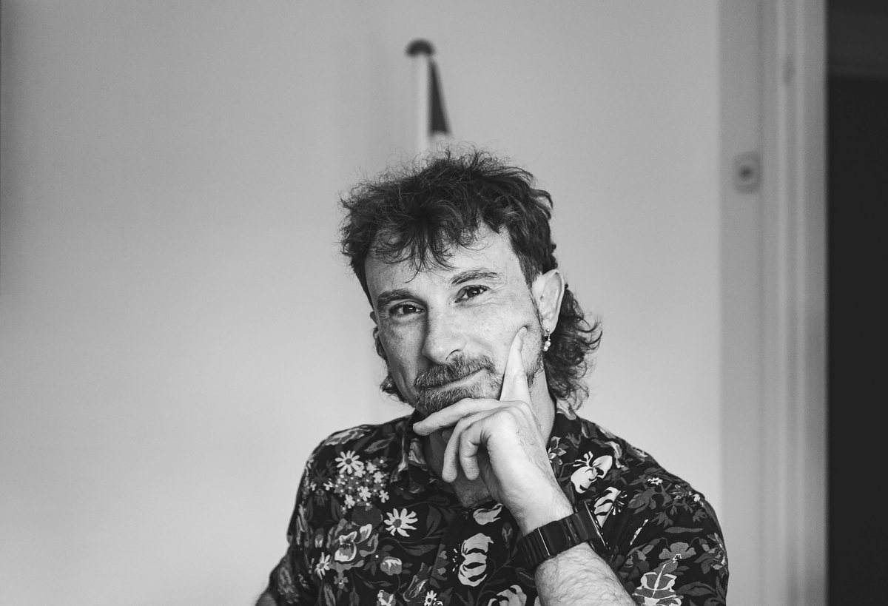

Danish language teacher · Based in Costa Rica
I help adults make a new language their own.
I'm Jacob Gramm Gren — a state-certified Danish language teacher and educator with a decade in adult and higher education, and a deep personal tie to Costa Rica. In 2026 I made it home — I'm now in San José, looking for my next role where languages, education and culture meet — in teaching, learning design, cultural exchange, or international cooperation, on the ground or online.
Based in Costa Rica · available now · open to roles & remote work

What I bring
Language teaching
Danish as a second language for adults, beginner to exam level (DU2 & DU3). Structured, clear, and built around real communication — helping people from many countries find their footing in a new language and culture.
Leadership & development
Six years at a residential adult-education college, latterly as vice principal — curriculum design, staff and daily operations, plus EU and Nordic project funding.
Learning design & writing
I build digital learning tools and write for real readers — I created Dansk Plus, a Danish-grammar app for iOS & Android, and have a series of language-education books in progress. Clear communication is the throughline.
Experience
Designed, built and shipped a Danish-grammar learning app: daily AI-generated exercises across 13 grammar topics, an AI teacher that explains every mistake, and DU2/DU3 modultest training with AI feedback — free to use, with classes for teachers.
Taught Danish to adult immigrants and refugees within Denmark's national language-education programme, at every level and to students aged 18 to 87, guiding them from arrival through to certified exam level. Served as elected staff representative (tillidsrepræsentant) for my colleagues.
Six years at a residential adult-education college (folkehøjskole), joining as a teacher and ending as vice principal. Taught language, philosophy and the humanities in Danish and English, mainly to international students. Secured funding from EU, Nordic and private sources — including Erasmus+, the European Solidarity Corps and NordPlus — wrote the applications, and reported to funders, municipalities and ministries. Built a Nordic-Baltic cultural-exchange project and partnerships across Europe and Latin America. Managed staff, curriculum development and day-to-day operations.
Mentored first-year university students into academic life as a tutor — and, before that, kept good company behind the bar at one of Odense's classic pubs.
Education
The state-certified qualification required to teach Danish as a second language to adults in Denmark.
An area-studies degree in the politics, culture and society of a world region — thesis on music and cultural movements during the 2010–11 Arab Spring.
The academic study of belief, culture and society — thesis on new religious movements and the discourse around “brainwashing,” from the 1950s to the 1990s.
Beyond the classroom
- RunningLong-distance runner with Silkeborg Atletikklub (SAK 77) — road races from 10K to the marathon.
- ListeningA lifelong heavy metal head and growing vinyl collector.
- WritingAspiring author of language-education books — writing about language, learning and life.
- LanguagesDanish (native) · English (near-native — MA taught entirely in English, and I taught in it for years) · Spanish (building fluency) — equally at home in Europe and in Costa Rica.
- ElsewhereFacilitator at UNLEASH (2017), the global innovation lab on the UN Sustainable Development Goals. Board member of Danmarks Teaterforeninger (2019–22), working with the Ministry of Culture. Technology and culture lead at DiEM25.
- Also trainedFundraising (Fundraiseren.dk) · Mentor for young adults (Højskoleforeningen) · Project management · Google Digital Garage, digital marketing.
Jacob’s World
I built a little pixel-art RPG about my life — running routes, vinyl crates, a Danish town and a map of Costa Rica, with the people in it. Walk around and talk to everyone; it’s the fastest way to get to know me. (Arrow keys / WASD, or the on-screen pad on mobile.)
Get in touch
Let's find out if I'm a good fit.
Hiring for a role in education, culture, communication, or international cooperation in Costa Rica — or open to working with someone remotely? I'd love to hear from you.